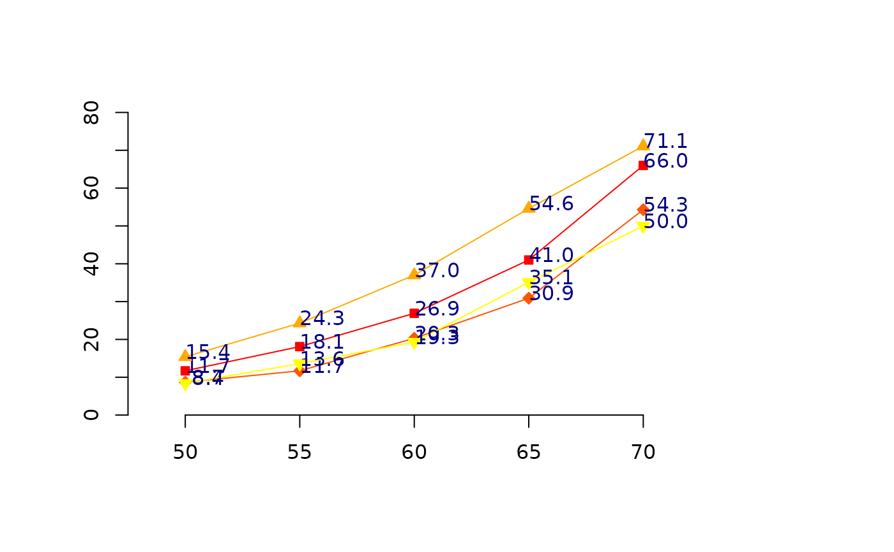
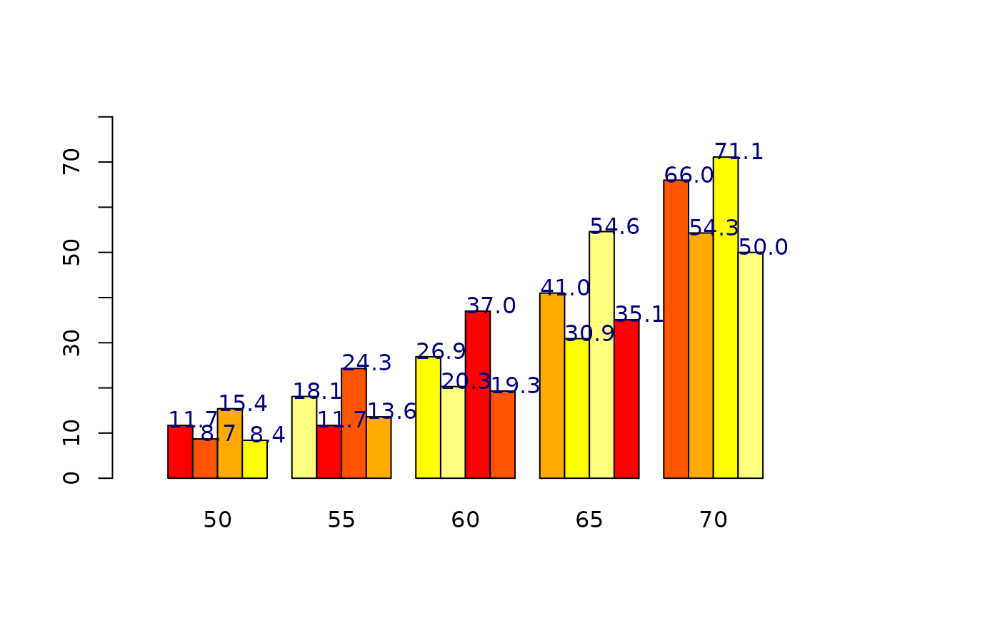

ooplot.RdAn extension of barplot2. Creates bar- and line-plots mimicking the style of OpenOffice plots. This utility can plot the values next to each point or bar as well as confidence intervals.
ooplot(data, ...)
# Default S3 method
ooplot(data, width=1, space=NULL, names.arg=NULL,
legend.text=NULL, horiz=FALSE,
density=NULL, angle=45, kmg="fpnumkMGTP",
kmglim=TRUE,
type=c("xyplot", "linear", "barplot", "stackbar"),
col=heat.colors(NC), prcol=NULL,
border=par("fg"), main=NULL, sub=NULL,
xlab=NULL, ylab=NULL, xlim=NULL, ylim=NULL,
xpd=TRUE, log="", axes=TRUE,
axisnames=TRUE, prval=TRUE, lm=FALSE,
cex.axis=par("cex.axis"),
cex.names=par("cex.axis"),
cex.values=par("cex"),inside=TRUE,
plot=TRUE, axis.lty=0, plot.ci=FALSE,
ci.l=NULL, ci.u=NULL, ci.color="black",
ci.lty="solid", ci.lwd=1, plot.grid=FALSE,
grid.inc=NULL, grid.lty="dotted",
grid.lwd=1, grid.col="black", add=FALSE,
by.row=FALSE, ...)a matrix of values describing the values that make up the
plot. The first column of data is taken as the axis against
which all the other values are plotted. The first column of
data may not be sparse.
optional vector of barwidths. Re-cycled to the number of bars drawn. A single value will have no visible effect.
the amount of space left before each bar. May be given
as a single number or one number per bar. If type is
stackbar, space may be specified by two numbers, where
the first is the space between bars in the same group, and the second
the space between groups. Defaults to c(0,1) if type is
a stackbar, and to 0.2 otherwise.
a vector of names to be plotted below each bar or
group of bars. If this argument is omitted, then the names are
taken from the row names of data.
a vector of text used to construct a legend for the
plot, or a logical indicating whether a legend should be included;
if legend.text is true, the row names of data will
be used as labels if they are non-null.
a logical value. If FALSE, the bars are drawn
vertically with the first bar to the left. If TRUE, the
bars are drawn horizontally with the first at the bottom.
a vector giving the the density of shading lines, in
lines per inch, for the bars or bar components.
The default value of NULL means that no shading lines
are drawn. Non-positive values of density also inhibit the
drawing of shading lines.
the slope of shading lines, given as an angle in degrees (counter-clockwise), for the bars or bar components.
the set of SI units to convert, defaults to "fpnumkMGTP". See below for details.
logical. If FALSE the conversion to SI units is not
performed. Default is TRUE.
a string indicating the preferred format of the plot, choices are: xyplot : plot where y is plotted against the x-value. linear : plot where y values are plotted against equidistant x-values. barplot : plot where y values are represented as bars against equidistant x-values. stackplot : plot where y values are stacked for identical x-values and bars are equidistant.
a vector of colors for the bars or bar components.
the color to be used for the plot region.
the color to be used for the border of the bars.
overall and sub titles for the plot.
a label for the x axis.
a label for the y axis.
limits for the x axis.
limits for the y axis.
logical. Should bars be allowed to go outside region?
a character string which contains `"x"' if the x axis is to be logarithmic, `"y"' if the y axis is to be logarithmic and `"xy"' or `"yx"' if both axes are to be logarithmic.
logical. If TRUE, a vertical (or horizontal, if
horiz is true) axis is drawn.
logical. If TRUE, and if there are
names.arg (see above), the
other axis is drawn (with lty=0) and labeled.
logical. If TRUE, then values are plotted above
all points and bars.
logical. If TRUE, the linear fit is plotted.
character scaling factor for numeric axis labels, names, and displayed values, respectively.
logical. If TRUE, the lines which divide
adjacent (non-stacked!) bars will be drawn. Only applies when
space = 0 (which it partly is when beside = TRUE).
logical. If FALSE, nothing is plotted.
the graphics parameter lty applied to the axis
and tick marks of the categorical (default horzontal) axis. Note
that by default the axis is suppressed.
logical. If TRUE, confidence intervals are plotted
over the bars. Note that if a stacked bar plot is generated, confidence
intervals will not be plotted even if plot.ci = TRUE
The confidence intervals (ci.l = lower bound, ci.u =
upper bound) to be plotted if plot.ci = TRUE. Values must have
the same dim structure as height.
the color for the confidence interval line segments
the line type for the confidence interval line segments
the line width for the confidence interval line segments
if TRUE a lined grid will be plotted behind the bars
the number of grid increments to be plotted
the line type for the grid
the line width for the grid
the line color for the grid
logical, if TRUE add barplot to current plot.
Logical value. If TRUE the data matrix is
organized with variables along rows rather than down colums.
further graphical parameters (par) are
passed to plot.window(), title() and
axis.
Plot units are automatically scaled to SI units based on the
maximum value present, according to the set of units specified by
characters in the kmg parameter. These letters are interpreted
as
peta = 1E15
tera = 1E12
giga = 1E09
mega = 1E06
kilo = 1E03
milli= 1E-03
micro= 1E-06
nano = 1E-09
pico = 1E-12
femto= 1E-15
with the default being "fpnumkMGTP" (all of these units). For example, if the largest value plotted is 1243000, it would be presented as 1.234M.
A numeric vector (or matrix, when beside = TRUE), say
mp, giving the coordinates of all the bar midpoints
drawn, useful for adding to the graph.
If beside is true, use colMeans(mp) for the
midpoints of each group of bars, see example.
data(VADeaths, package = "datasets")
VADeaths <- cbind( Age=c(50,55,60,65,70), VADeaths)
mp <- ooplot(VADeaths) # default
mp <- ooplot(VADeaths, type="xyplot") # same as default
mp <- ooplot(VADeaths, type="linear") # linear scale

mp <- ooplot(VADeaths, type="linear", log="y") # log scale on y axis
mp <- ooplot(VADeaths, type="barplot") # barplot

mp <- ooplot(VADeaths, type="stackbar") # stacked
tot <- colMeans(VADeaths[,-1])
ooplot(VADeaths,
col = c("lightblue", "mistyrose", "lightcyan", "lavender"),
legend = colnames(VADeaths)[-1], ylim = c(0, 100),
type="barplot", cex.values=0.75)
title(main = "Death Rates in Virginia", font.main = 4)
##
## Capability demo
##
## examples for the ooplot routine
##
## create some test data
test1 <- data.frame(x=c(0,1,2,3,4), lin=c(0,1,2,3,4))
test2 <- data.frame(x=c(0,1,2,3,4), par=c(0,1,4,9,16))
test3 <- data.frame(x=c(-2,-1,0,1,2),y2=c(4,1,0,1,4))
## single line test example
test1f <- test1
## two column example
test2f <- merge(test1,test2,by.x="x",all=TRUE,sort=TRUE)
## three column example
test3f <- merge(test2f,test3,by.x="x",all=TRUE,sort=TRUE)
## subset, single row, example
test5r <- test3f[5,]
##
## xyplot, linear, barplot, stackbar
dev.off()
#> null device
#> 1
mat <- matrix(c(1:16),4,4,byrow=TRUE)
layout(mat)
ooplot(test1f,type="barplot",col=c("red"))
title(main="barplot")
ooplot(test2f,type="barplot",col=c("red","blue"))
ooplot(test3f,type="barplot",col=c("red","blue","green"))
ooplot(test5r,type="barplot",col=c("red","blue","green"))
ooplot(test1f,type="xyplot",col=c("red"))
title(main="xyplot")
ooplot(test2f,type="xyplot",col=c("red","blue"))
ooplot(test3f,type="xyplot",col=c("red","blue","green"))
ooplot(test5r,type="xyplot",col=c("red","blue","green"))
ooplot(test1f,type="linear",col=c("red"))
title(main="linear")
ooplot(test2f,type="linear",col=c("red","blue"))
ooplot(test3f,type="linear",col=c("red","blue","green"))
ooplot(test5r,type="linear",col=c("red","blue","green"))
ooplot(test1f,type="stackbar",col=c("red"))
title(main="stackbar")
ooplot(test2f,type="stackbar",col=c("red","blue"))
ooplot(test3f,type="stackbar",col=c("red","blue","green"))
ooplot(test5r,type="stackbar",col=c("red","blue","green"))
# restore default layout (1 plot/page)
layout(1)